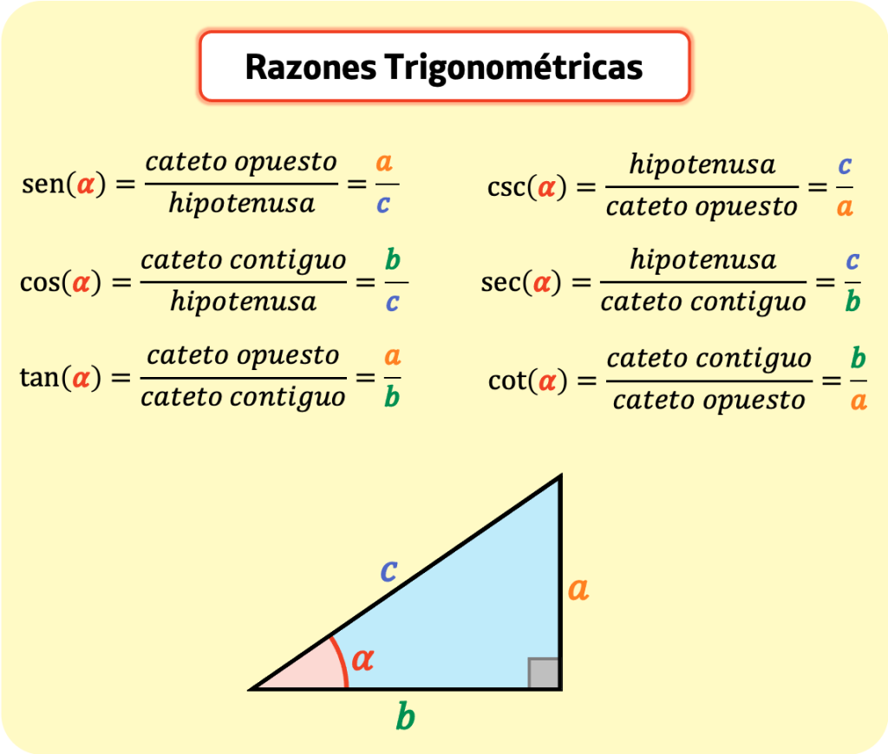

Las funciones trigonométricas relacionan los ángulos de un triángulo con las longitudes de sus lados. Son fundamentales en matemáticas, física e ingeniería, ya que permiten modelar fenómenos periódicos como ondas, sonidos y movimientos circulares.
También existen sus funciones recíprocas: cotangente (cot), secante (sec) y cosecante (csc).
